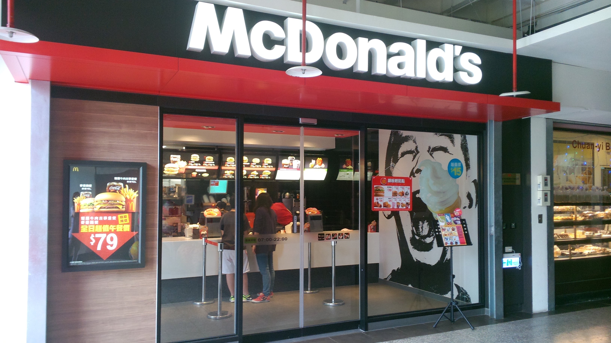

麥當勞
- 本校營業地點位置 第一學生活動中心餐廳
- 餐飲業者名稱 廖喬偉
- 公司名稱 麥當勞
- 營業時間及休息日
- 營業時間：星期一~日07:00~22:00
- 休息日：國定假日及活動中心公告休假日
- 聯絡電話 02-23621290
- 營業項目、型態 速食
- 業者簡介
- 台北台大店於101年12月31日隆重開幕，提供超值優惠早午晚餐，憑臺大有效證件9折優惠(特價品除外) 。
- 我們希望實踐麥當勞價值成為學生在 「台大經驗」中的共同美好記憶，並透過專業餐飲管理與校方建立良好的互信關係。
- 廖喬偉 (國立台灣大學經濟學系97級畢業)
- 75年次，大二加入麥當勞打工半年後，轉至麥當勞品管部/採購部/產品開發部擔任行政助理。預官退伍後加入麥當勞Fast Track快速升遷計劃，18個月內升遷至餐廳經理，陸續於天母、士林、北投、林森店服務，2011年赴上海漢堡大學參與餐廳領導實務課程，2012年代表台灣麥當勞擔任倫敦奧運領隊，進入奧運選手村餐廳服務。
餐廳業者參考照片
- 